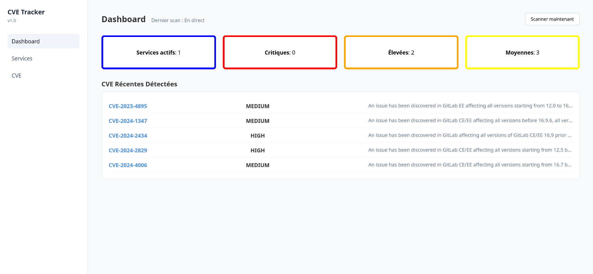

CVE Tracker — Système de Veille et d'Alerte aux Vulnérabilités
Comment automatiser la surveillance cyber de son infrastructure ? J'ai développé CVE Tracker, une application interne qui scanne le dictionnaire officiel du NIST, centralise les vulnérabilités découvertes et alerte instantanément les équipes sur Discord en cas de faille Critique ou Élevée.
1. Flux de Données & Architecture Globale
Pour éviter le jargon abstrait, voici comment circule concrètement l'information au sein du projet, depuis la découverte d'une faille publique jusqu'à sa notification :
- Étape 1 (NVD) : Une nouvelle faille est publiée sur l'API v2 du NIST.
- Étape 2 (Flask) : Mon script planifié interroge l'API, nettoie le format CPE et applique un tri chronologique inversé en mémoire vive.
- Étape 3 (SQLite) : Les données sont nettoyées et stockées localement dans un volume persistant.
- Étape 4 (Discord) : Si le score CVSS est supérieur ou égal à 7.0 (High/Critical), un webhook pousse une alerte formatée avec la description.
2. Le Dashboard Réduit à l'Essentiel
L'interface graphique a été pensée pour être ultra-rapide. Un script JS filtre instantanément les lignes du tableau en manipulant les propriétés CSS d'affichage du DOM, éliminant tout rechargement de page ou requête SQL superflue.

3. Défi Technique : Contourner le Blocage (Rate Limiting) de l'API
L'API du NIST bloque agressivement les requêtes (5 requêtes max toutes les 30 secondes sans authentification). J'ai résolu ce problème de deux manières :
# 1. On force la pagination à 2000 résultats pour tout récupérer en UN SEUL appel par service
url = f"https://services.nvd.nist.gov/rest/json/cves/2.0?cpeName={cpe_propre}&resultsPerPage=2000"
# 2. Injection dynamique de jetons (Tokens) stockés en BDD pour passer la limite à 50 requêtes / 30s
if NVD_API_KEY:
headers['apiKey'] = NVD_API_KEY
# 3. Tri chronologique Python pour contrer le désordre natif de l'API
vulnerabilities.sort(key=lambda x: x.get('cve', {}).get('published', ''), reverse=True)4. Le script JavaScript de filtrage fluide
Voici la logique JavaScript événementielle qui écoute les clics sur les cartes statistiques pour masquer ou afficher à la volée les lignes correspondantes dans le navigateur :
const severiteCible = this.getAttribute('data-severite'); // Ex: 'critical'
cveRows.forEach(row => {
// Si la ligne correspond à la carte cliquée, on l'affiche en Flexbox, sinon on la masque
if (row.getAttribute('data-severite') === severiteCible) {
row.style.setProperty('display', 'flex', 'important');
} else {
row.style.setProperty('display', 'none', 'important');
}
});5. Déploiement en Production (Proxmox VE & Docker Compose)
Le projet est hébergé chez moi de façon totalement isolée. L'infrastructure repose sur un conteneur **LXC Debian** configuré sur mon serveur **Proxmox**. À l'intérieur, l'application est orchestrée par **Docker Compose**.
Le stockage de la base SQLite et des fichiers d'environnement sensibles est externalisé du conteneur applicatif via des montages de volumes directoriaux (./instance), garantissant qu'aucune donnée de configuration n'est perdue lors du déploiement d'une mise à jour de l'image.